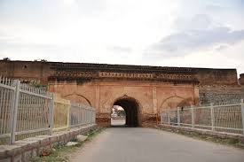

I was born in Chennai, and the city’s cultural richness, discipline, and resilience have deeply influenced who I am today. I lived there until 2021, building both my personal life and the foundation of my professional journey. Chennai played a significant role in shaping my early career, my values, and my global outlook, especially during my formative years working across the aerospace and pharmaceutical sectors.

In 2021, I moved to Bangalore to embrace new professional opportunities and expand my leadership journey through large-scale transformation initiatives. Since then, Bangalore has become home—a place where I continue to grow in my career while also nurturing my family life and pursuing my passion for terrace gardening.
